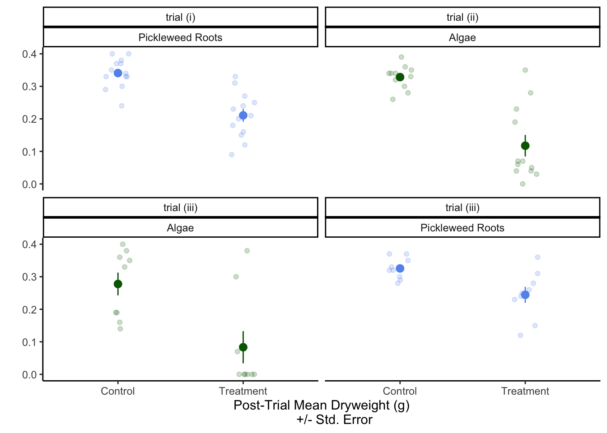
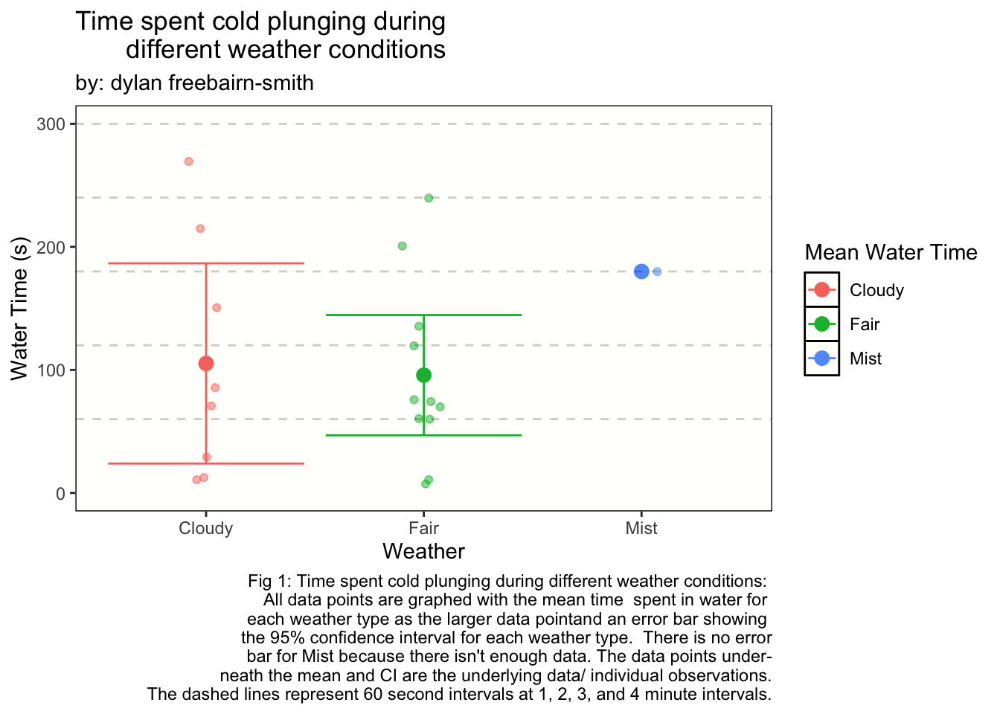

#load in packages
library(lterdatasampler)
library(lubridate) #package used to convert date to year and month in separate columns
library(tidyverse)
library(janitor)
library(flextable)Midterm
Problem 1
- Null Hypothesis (\(H_0\)): Phosphorus levels in the soil are equal in recently burned, historically burned, and unburned areas on the reserve.
Alternative Hypothesis (\(H_A\)): The soil phosphorus levels in the recently burned, historically burned, and unburned areas on the reserve are not all equal.
A Single-factor ANOVA test would be a good option because there are more than 2 groups/ levels (recent, historic, unburned) and a single factor/treatment (soil phosphorus levels).
The three main assumptions for an ANOVA test are independent observations, equal variances for all of the group(recent, historic, unburned) variables, and a normally distributed response variable (soil Phosphorus level).
Welch’s ANOVA would be a reasonable alternative to the Single-factor ANOVA if the groups did not fulfill the assumption of equal variances and/or if the highest variance was more than 4x the lowest variance. Welch’s ANOVA is very similar to a regular ANOVA, but it does not require equal variances.
Yes, there could be a difference between the burned and unburned treatments because the means are all different, and the confidence intervals do not overlap.
We can assume that the figure is normally distributed because the points follow the quantile line. From the results of the Shapiro-Wilkes test, we can be even more sure the data is normally distributed because all of the test statistics are close to 1 (a perfect match with normal distribution) and \(p > \alpha\), so the data is not significantly different from normal distribution and we can continue to use the parametric test.
The variances are equal enough because the p-value of the Levene test is less than 0.05, and the highest variance is not more than 4x the lowest variance.
There is a large (\(\eta^2 = 0.47\), CI [0.34,1.00]) difference between soil phosphorus levels between areas with different times since burn (Single-Factor ANOVA, F(2,102) = 4.1822, p-value = 0.018, \(\alpha = 0.05\)). There is a significant difference (\(\alpha = 0.05\)) between all of the groups. The largest difference in phosphorus levels between types of sites was unburned and recently burned sites (Tukey HSD = -0.357, CI[-0.443, -0.272], P = 0.000) and the smallest difference was between recent burn and historic burn sites (Tukey HSD = 0.162, CI[0.0769, 0.248], P < 0.000).
Problem 2
They did the Crab Feeding Trials to test whether crabs consume below-ground roots when presented algae at the same time. They ran Welch’s two-sample t-test to account for the different variance structures between the three trials.
They had one trial with just pickleweed roots, one with just algae, and one with pickleweed roots and algae but half the amount of each in the previous two trials. Each trial had a control (no-crabs) and a treatment (crabs) and ran for 72 hours.
The difference in mean dry weights was that if there was a higher mean dry weight that meant that the crabs ate less of the algae or root in that trial. In every trial, the control had a higher mean dry weight than the treatment and this is because in the control there were no crabs introduced to consume the algae or roots, while there were crabs introduced in the treatment.
CFT_Data <- read_csv("CFT_Data.csv") #read in the crab feeding trial dataCFT_Meancrying <- CFT_Data %>% # Create a new df for the means
group_by(Assigned_TTT, Type, Tissue) %>% #group the data by trial # then by treatment or control, then by tissue type
select(Assigned_TTT, Type, Tissue, Post_Trial_Dryweight_g) %>% #select my relevant columns
summarise(meanCFT = mean(Post_Trial_Dryweight_g), .groups = "keep") %>% #find the mean of the Post trial dryweight by the predefined groups
pivot_wider(names_from = Type,
values_from = meanCFT) %>% # Pivot the table to wider so that Type (control and treatment) each have their own columns
rename(Control_mean = Control, Treatment_mean = Treatment) # rename the columns
CFT_SDcrying <- CFT_Data %>% # Create a new df for the means
group_by(Assigned_TTT, Type, Tissue) %>% #group the data by trial # then by treatment or control, then by tissue type
select(Assigned_TTT, Type, Tissue, Post_Trial_Dryweight_g) %>% #select the relevant columns
summarise(sdCFT = sd(Post_Trial_Dryweight_g), .groups = "keep") %>% #find the sd of the Post trial dryweight by the predefined groups
pivot_wider(names_from = Type,
values_from = sdCFT) %>% # Pivot the table to wider so that Type (control and treatment) each have their own columns
rename(Control_sd = Control, Treatment_sd = Treatment)# rename the columns
cryingmean_sd <- inner_join(CFT_SDcrying, CFT_Meancrying)print(cryingmean_sd)# A tibble: 4 × 6
# Groups: Assigned_TTT, Tissue [4]
Assigned_TTT Tissue Control_sd Treatment_sd Control_mean Treatment_mean
<chr> <chr> <dbl> <dbl> <dbl> <dbl>
1 trial (i) Pickleweed R… 0.0457 0.0710 0.341 0.211
2 trial (ii) Algae 0.0351 0.115 0.328 0.118
3 trial (iii) Algae 0.105 0.149 0.278 0.0833
4 trial (iii) Pickleweed R… 0.0328 0.0740 0.326 0.244 #### Trial 1
ttest_T1 <- CFT_Data %>% #create a df for a t-test on trial (i)
group_by(W.crab_W.O.crab) %>% #group the columns by treatment/W.crab and control(w.o.crab)
filter(Assigned_TTT == "trial (i)") %>% #filter to only include trial 1
select(Assigned_TTT, W.crab_W.O.crab, Type, Post_Trial_Dryweight_g) #select the necessary columns
t_test_result_T1 <- t.test(Post_Trial_Dryweight_g ~ W.crab_W.O.crab, #assign the test results to an object and run the test on the categorical and value columns
data = ttest_T1, #use the custom df
var.equal = FALSE) #variances are unequal so use a welch's t-test
print(t_test_result_T1) #show results
Welch Two Sample t-test
data: Post_Trial_Dryweight_g by W.crab_W.O.crab
t = -5.5502, df = 20.494, p-value = 1.804e-05
alternative hypothesis: true difference in means between group With Crab and group Without Crab is not equal to 0
95 percent confidence interval:
-0.17878338 -0.08121662
sample estimates:
mean in group With Crab mean in group Without Crab
0.2107692 0.3407692 #### Trial 2
ttest_T2 <- CFT_Data %>% #create a df for a t-test on trial (ii)
group_by(W.crab_W.O.crab) %>% #group the columns by treatment/W.crab and control(w.o.crab)
filter(Assigned_TTT == "trial (ii)") %>% #filter to only include trial 2
select(Assigned_TTT, W.crab_W.O.crab, Type, Post_Trial_Dryweight_g) #select the necessary columns
t_test_result_T2 <- t.test(Post_Trial_Dryweight_g ~ W.crab_W.O.crab, #assign the test results to an object and run the test on the categorical and value columns
data = ttest_T2, #assign custom df
var.equal = FALSE)#variances are unequal so use a welch's t-test
print(t_test_result_T2) #show reults
Welch Two Sample t-test
data: Post_Trial_Dryweight_g by W.crab_W.O.crab
t = -6.098, df = 13.051, p-value = 3.729e-05
alternative hypothesis: true difference in means between group With Crab and group Without Crab is not equal to 0
95 percent confidence interval:
-0.2854970 -0.1361696
sample estimates:
mean in group With Crab mean in group Without Crab
0.1175000 0.3283333 #### Trial 3 Pickleweed
ttest_PWT3 <- CFT_Data %>% #create a df for a t-test on trial (iii) w/ pickleweed root
select(Assigned_TTT_old, Assigned_TTT, Type, Planned_Starting_FW_g, Post_Trial_Dryweight_g, Tissue, W.crab_W.O.crab) %>% #select the necessary columns
group_by(Assigned_TTT) %>% #group the columns by treatment and control
filter(Assigned_TTT %in% c("trial (iii)") & Tissue == "Pickleweed Roots") #filter to only include trial 3 and pickleweed root in the Tissue column
t_test_result_PWT3 <- t.test(Post_Trial_Dryweight_g ~ W.crab_W.O.crab, #assign the test results to an object and run the test on the categorical and value columns
data = ttest_PWT3, #assign custom df
var.equal = FALSE) #variances are unequal so use a welch's t-test
print(t_test_result_PWT3) #show results
Welch Two Sample t-test
data: Post_Trial_Dryweight_g by W.crab_W.O.crab
t = -3.0054, df = 11.031, p-value = 0.01193
alternative hypothesis: true difference in means between group With Crab and group Without Crab is not equal to 0
95 percent confidence interval:
-0.14049285 -0.02172937
sample estimates:
mean in group With Crab mean in group Without Crab
0.2444444 0.3255556 #### Trial 3 Algae
ttest_ALT3 <- CFT_Data %>% #create a df for a t-test on trial (iii) w/ Algae
select(Assigned_TTT_old, Assigned_TTT, Type, Planned_Starting_FW_g, Post_Trial_Dryweight_g, Tissue, W.crab_W.O.crab) %>% #select the necessary columns
group_by(Assigned_TTT) %>% #group the columns by treatment and control
filter(Assigned_TTT %in% c("trial (iii)") & Tissue == "Algae") #filter to only include trial 3 and algae in the Tissue column
t_test_result_ALT3 <- t.test(Post_Trial_Dryweight_g ~ W.crab_W.O.crab, #assign the test results to an object and run the test on the categorical and value columns
data = ttest_ALT3, #assign custom df
var.equal = FALSE)# variances are unequal so use a welch's t-test
print(t_test_result_ALT3) #show results
Welch Two Sample t-test
data: Post_Trial_Dryweight_g by W.crab_W.O.crab
t = -3.2041, df = 14.398, p-value = 0.006177
alternative hypothesis: true difference in means between group With Crab and group Without Crab is not equal to 0
95 percent confidence interval:
-0.32426486 -0.06462403
sample estimates:
mean in group With Crab mean in group Without Crab
0.08333333 0.27777778 ggplot(data = CFT_Data, #use original dataframe
aes(x = Type, #x-axis is the dryweight of algae or pickleweed left
y = Post_Trial_Dryweight_g, # y is the type of experiment it was control or treatment (normally on the x but for a horizontal jitter this is required)
color = Tissue)) + # classify the colors of th data according
geom_jitter(width = 0.1, # change the width of the horizontal jitter
height = 0, # make the height of the horizontal jitter 0
alpha = 0.2) + # make the underlying data transparent
stat_summary(geom = "pointrange", # make the
fun.data = mean_se, # display the mean and the standard error of the data in the pointrange
size = 0.5) + #make the mean point larger to differentiate from the underlying data
facet_wrap( ~ Assigned_TTT + Tissue) + # create separate plots for each trial and each Tissue type
guides(color = "none") + # lake out the legend for the "color = Tissue" in the ggplot(aes())
theme_classic() + # choose a theme without gridlines
scale_color_manual(values=c("darkgreen", "cornflowerblue")) + # change the colors of the Tissue
labs(x = "Post-Trial Mean Dryweight (g)
+/- Std. Error",# add an x-axis title
y = "") # take out the y-axis title because we only need the tick marks to explain it
- Fig. 1: Laboratory Crab Feeding Trial Results: Showing mean amounts (Highlighted dots) of Dryweight Pickleweed (S. Pacifica) Root or Algae (Ulva Lactuca) left after being a jar for 72 hours Without Crab (Control) vs. With Crab (Treatment) (\(\pm\) SEM (whiskers)). The transparent points underneath the Mean and SE are the underlying data points from observation within the trial. Green represents the Algae and blue represents Pickleweed roots. In trial (iii) both Pickleweed roots and algae were put in the jar. Data citation: Beheshti, Kathryn (2022). Long-term study reveals top-down effect of crabs on a California salt marsh [Dataset]. Dryad. https://doi.org/10.7291/D1H971
Problem 3
arc_weather <- arc_weather # assign the dataset from lterdatasampler package ot a dataframe
arc_weather_clean <- arc_weather %>% #create a clean dataframe to plot the desired data
mutate(year = year(date), # create a anew column by extracting the year from the date column
month_name = month(date, label = TRUE, abbr = FALSE)) %>% #create a new column by extracting the month from the date column and making sure that it isnt abbreviated by using the "label = TRUE and abbr = FALSE" arguments
select(year, month_name, mean_airtemp) %>% #select the columns we want to plot
group_by(year, month_name) %>% #group the rows by year and then by month name so summarise() works
summarise(mean_monthly_airtemp = mean(mean_airtemp)) %>% # Summarize the mean daily air temp into a column with the mean air temp each group of months within a each year
rename(month = month_name) #change the "month_name" column name to "month"
head(arc_weather_clean, 10) #display the first ten rows of the cleaned table# A tibble: 10 × 3
# Groups: year [2]
year month mean_monthly_airtemp
<dbl> <ord> <dbl>
1 1988 June 9.61
2 1988 July 12.0
3 1988 August 6.96
4 1988 September -0.26
5 1988 October -16.4
6 1988 November -29.2
7 1988 December -17.1
8 1989 January -29.9
9 1989 February -8.06
10 1989 March -19.4 ggplot(arc_weather_clean, #use the cleaned data set
aes(x = month, # put the month on the x-axis
y = mean_monthly_airtemp, # put the mean monthly air temp on the y axis (multiple values are associated with each month name)
group = year, # group the points by year to connect the mean monthly air temps of each different year
color = year)) + # assign colors by year
geom_line() + # add a line for each year connected my the mean monthly air temps
geom_hline(yintercept = 0, # add a line at y = 0
linetype = "dashed") + # make the line dashed
scale_color_gradient(high = "#55B0F4", # choose a color for the low end of the gradient for the legend
low = "#142D46", # choose a high end color for the legend gradient
name = "Year") + # name the legend "Year"
theme_light() + # change the theme to light
theme(panel.border = element_rect(color = "grey"), # change the plot panel borders to be grey
panel.grid = element_blank(), # take out the gridlines
axis.text.x = element_text(size = 6), # change the size of the tick mark labels
axis.title = element_text(size = 9), # change the size of the axis label font
title = element_text(size = 10)) + # change the title font size
labs(title = "Toolik field station is above freezing between May and September", # title the plot
y = expression(Mean~Monthly~Air~Temperature~"("*degree*C~")"), # name the y axis but include the degree symbol in Celcius
x = "Month") # name the x axis
Problem 4
My response variable is the amount of time I spend in the water during a cold plunge and the predictor variable I am using is the weather on each day of the plunge. I will be looking at the mean amount of time I spend in the water when it is Fair, Cloudy, and Misty weather.
& c.
Cold_Plunge <- read_csv("Cold_Plunge.csv") # read in my csv sheetCold_Plunge_Clean <- Cold_Plunge %>% #assign the cleaned df to a new object
select(`Water_Time (s)`, Weather) %>% # select the columns I want to analyze
clean_names() %>% #clean the names of the columns
group_by(weather) # group the columns by weather type
Cold_Plunge_WTbW_Mean <- Cold_Plunge_Clean %>% # create a dataframe with the means by different weather type
summarise(mean = mean(water_time_s)) %>% # find the mean of water time by the grouped weatehr types
rename(Weather = weather) %>% # rename the column
rename(`Mean Water Time (s)` = mean) # rename the column
ggplot(Cold_Plunge_Clean, # plot the initial clean df
aes(x = weather, # plot the weather type on the x axis
y = water_time_s, # plot the water time on the y axis
color = weather)) + # color the data by weather type
geom_jitter(width = .1, # create a jitter plot
alpha = 0.5) + # make the underlying data transparent
stat_summary(geom = "errorbar", # create a error bar showing the confidence interval of the mean for water time by weather type
fun.data = mean_cl_normal) + # find the the CI
geom_point(data = Cold_Plunge_WTbW_Mean, # use the mean summary table i created
aes(x = Weather, #nweather type on the x
y = `Mean Water Time (s)`, # water time on the y
color = Weather), # color the points by weather type
size = 3) + # change the size of the points
geom_hline(yintercept = c(60, 120, 180, 240, 300), # add a line at y = 60, 120, 180, 240, 300
linetype = "dashed",# make the lines dashed
alpha = 0.2) + # make the lines transparent
theme(panel.background = element_rect( fill = "#FFFFFC", # change the background color of the grid to increase
color = "black", # change the panel outline color
linewidth = 0.5), # change the linewidth of the panel outline
panel.grid.major = element_blank(), # take out the major grid lines
panel.grid.minor = element_blank()) + # take out the minor gridlines
ylim(0,300) + # set the limits on the y axis
labs(title = "Time spent cold plunging during
different weather conditions", # Add title
subtitle = "by: dylan freebairn-smith", # Add a subtitle
y = "Water Time (s)", #Add a y axis label
x = "Weather", #Add a x axis label
caption =
"Fig 1: Time spent cold plunging during different weather conditions:
All data points are graphed with the mean time spent in water for
each weather type as the larger data pointand an error bar showing
the 95% confidence interval for each weather type. There is no error
bar for Mist because there isn't enough data. The data points under-
neath the mean and CI are the underlying data/ individual observations.
The dashed lines represent 60 second intervals at 1, 2, 3, and 4 minute intervals.", # add a caption
color = "Mean Water Time") # Change the legend title
set_flextable_defaults() # set the default settings for the flextable
ft <- flextable(Cold_Plunge_WTbW_Mean) #assign the mean water time table to the flex table
ft <-set_caption(ft, caption = "Mean Seconds in Water by Weather Type") # create a caption/title for the flextable
ft # show the flextableWeather | Mean Water Time (s) |
|---|---|
Cloudy | 105.25000 |
Fair | 95.72727 |
Mist | 180.00000 |